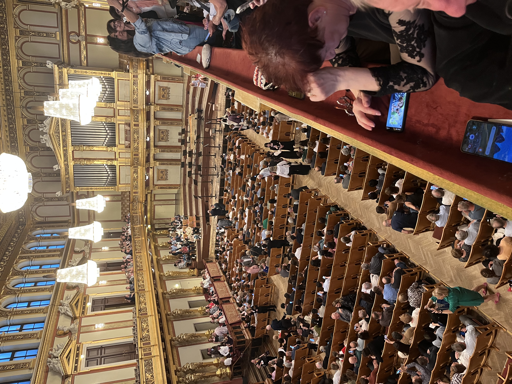
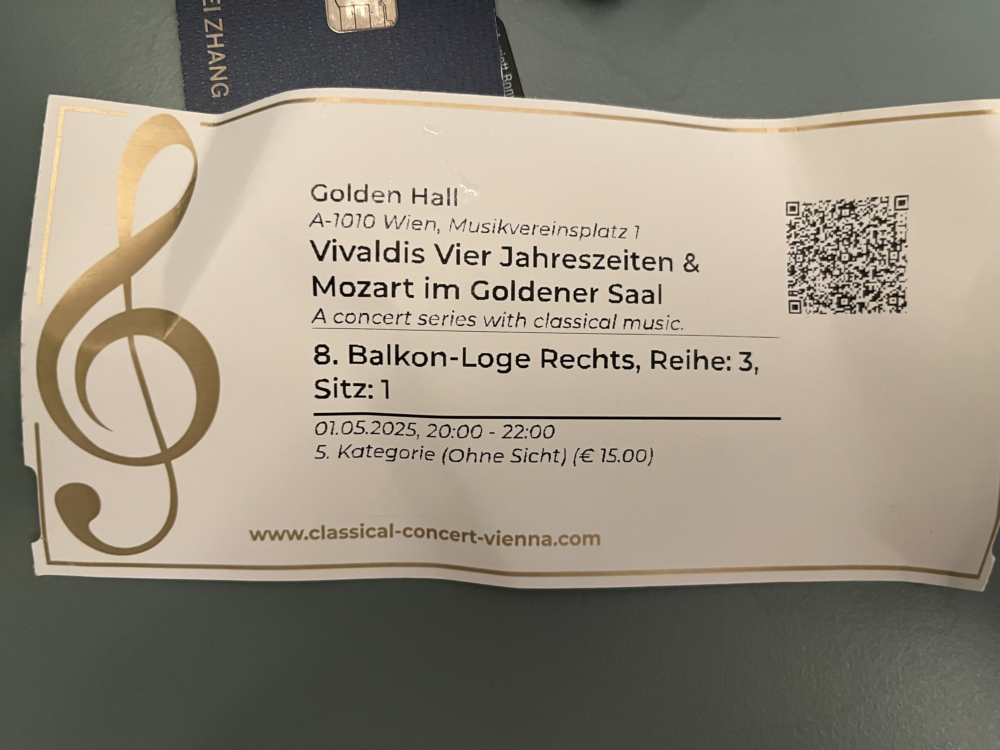
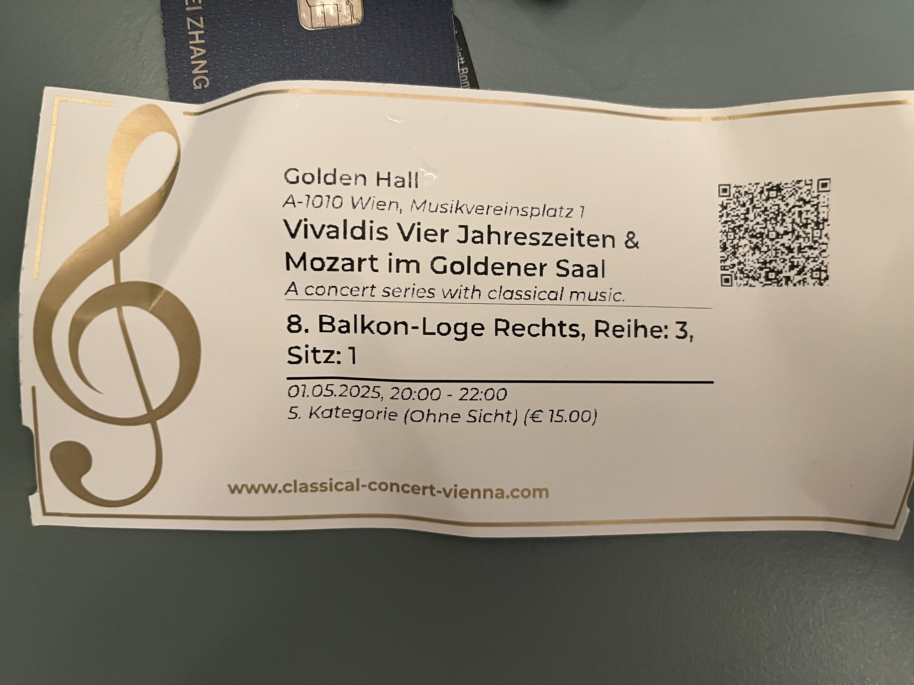

Well,今天去了金色大厅听音乐会，算是圆满了吧。在Vienna一个theater里面听了歌剧魅影，教堂里面听了弦乐四重奏，金色大厅听了四季和mozart的小夜曲，音乐之旅可以告一段落了。总的感受就是，BSO是真牛逼啊。

音乐剧听的少一些，所以没法和别的地方歌剧魅影相比较，但是整体还是很精彩的，唱的很出彩。但坦白说，音乐这块除了反派出场的那部分比较印象深刻，别的没有特别有变化或者欣赏的。剧情吧，就更不适合27岁的我了，有点naive的感觉。当我意识到这是1988左右出来的音乐剧后，顿时了然，难怪价值观是这样，有才华的男主抵不过帅气多金男二，女主更是左右逢源，男主那种有一种爱叫做放手的思维更是抽象，所以很难共情。不过舞台表现的不错，尤其是最后男主消失的那段，愣是没看明白咋消失的。
教堂里面的弦乐四重奏挺好的，小场所的表演之前很少有机会接触，算是圆梦。但是church对cello对影响还是有的，还有一点就是观众容易乱鼓掌。不过一个小时的表演还是大部分人能坚持下来的，所以没有太多其他的声音。
说到其他的声音就不得不提今晚的金色大厅了。咳嗽此起彼伏，站起坐下，接语音，打电话，甚至走来走去，好家伙，这么多年头一次意识到观众还可以有这么多的动作，而且有些观众明显时间长了坐不住，表现得还没有小朋友好。只能说下次这种名字很大的地方还是得舍得钱买好票，起码那样旁边的观众的影响会小一些。至于线下听四季和mozart的小夜曲和别的小提琴协奏的感受是，小提琴声音会比较清越，而cello更加的稳厚一些，别的情绪啥的也没法分析了。发现金色大厅并不会关灯演奏，而且演奏家都是站着的，emmm挺辛苦的，下面的小金人装饰也有点意思，整体呈现新古典主义风格。最后提一嘴，这儿是我为数不多存包要收费的地方，也是开了眼了。去了金色大厅，顿感BSO的好，观众高素质，演奏环境好，水平高，人还少，观众鉴赏时间长品味高，没啥缺点了就。
最后说一下大家的dress code吧。音乐剧应该是整体最正式的，我这种T恤是凤毛麟角，男生女生基本上是正装（裙子衬衫西服），年轻女生较多，所以看上去很是青春靓丽。教堂里面相对casual一些，穿的正式的人很少，老人家可能更正式些。金色大厅就很有意思的，年轻女生很精致，相伴的男生很casual，中年夫妇都很不在乎，至于老人家，可能更多坐在好一些的位置上，没怎么看到。可以看出音乐剧本地人最多，金色大厅则大多游客，打卡性质多些，这个常不常来我还是很容易判断的。
 
